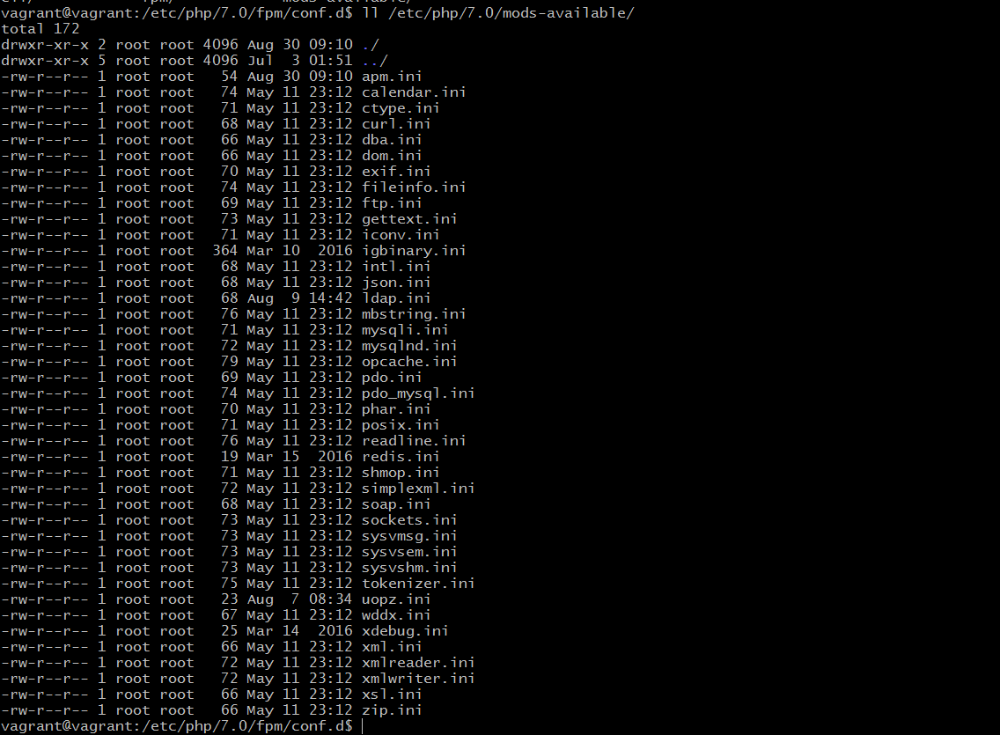
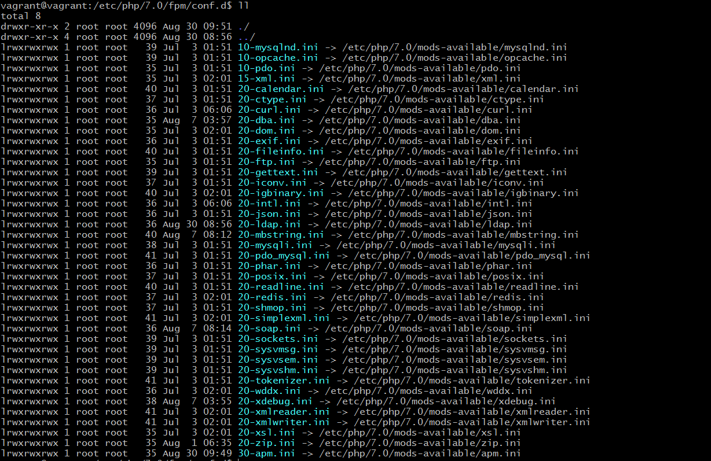

php扩展模块的加载顺序
为啥会有这个问题？
今天在安装php的扩展apm的时候，文档写着必须在json扩展加载之后再加载apm模块,原文如下:
Activate the extension in the php configuration by adding:
extension=apm.so
Note: APM depends on JSON, so the apm.so extension must be loaded after JSON!
那么php的扩展加载顺序是怎么的?
按照php手册上面的说明，php扩展加载是写在php.ini文件中配置的，而php的配置文件是顺序解析的，这说明除了默认内核扩展，php的其他扩展模块 的加载顺序就是php.ini中的先后顺序，这是针对php.ini中的配置。对于ubuntu来说，php的扩展配置是单独放置在额外的配置目录，每一个扩展加载都是 一个配置文件，类似nginx的站点配置，以ubuntu-16.04-LTS为例：
如果我们要安装php的curl扩展:
sudo apt update && sudo apt install php7.0-curl
最终会在php的扩展目录安装curl.so（/usr/lib/php/20151012/）,同时会在php的mods_available目录新增配置文件(curl.ini),这时候，php的
curl扩展还没有加载，需要将curl.ini软连接到/etc/php/7.0/fpm/conf.d/，重启php的fpm才会生效
php扩展配置目录

php的fpm扩展加载目录

那么问题来了，如果以这种方式加载php的扩展，扩展的加载顺序如何呢？
答案就是安装配置文件目录的文件自然排序顺序加载的.至于为什么，看了php的扩展加载目录前面的那个数字就明白了。